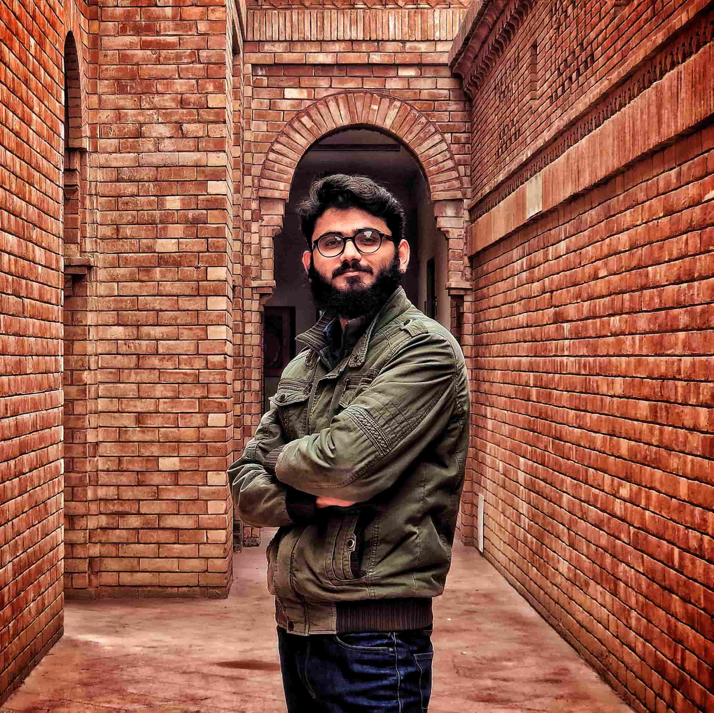

Designing has always been one of my favorite parts of creating something new. I enjoy turning ideas into easy-to-use and visually appealing designs. During my studies, I worked on several projects, including designing the UI for our final year project, "Yurt," using Figma. I’ve also explored Blender and 3D modeling. . For me, good design is about making technology simple and enjoyable to use.

Zohaib Ahmad
Computer Scientist
Hi, I recently graduated with a degree in Computer Science, and I’m excited to share my work and interests with you. I love building things—whether it’s designing user-friendly apps, coding powerful backend systems, or exploring the possibilities of machine learning. This portfolio is a glimpse into my journey, highlighting my passion for design and programming. Let’s dive in!